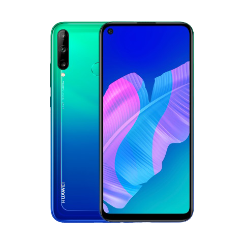
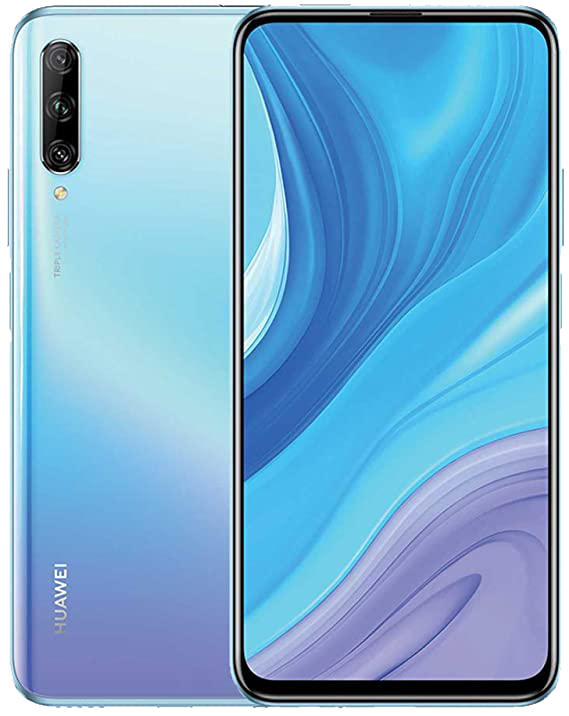
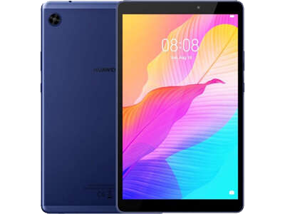
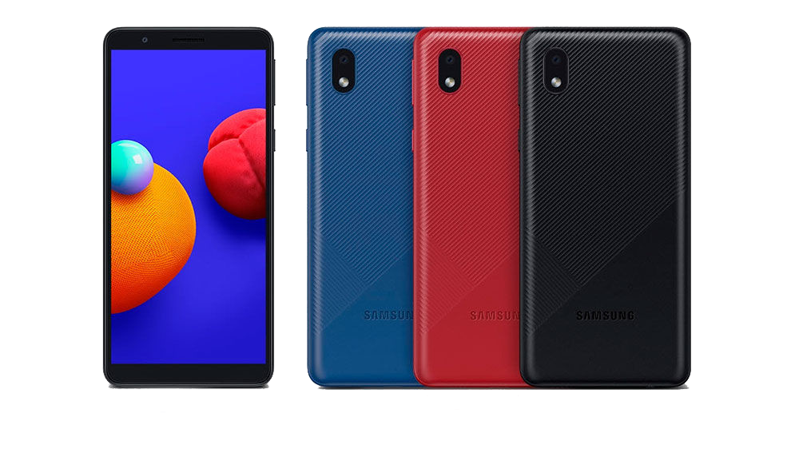
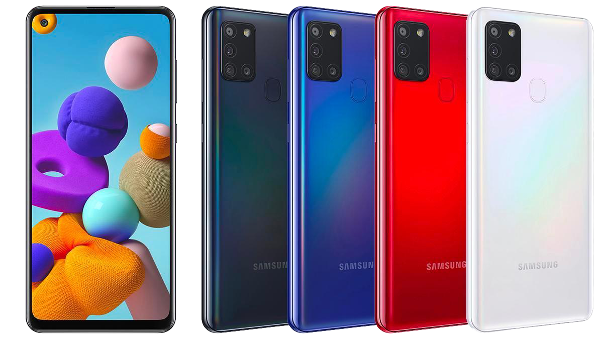
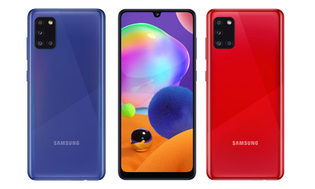
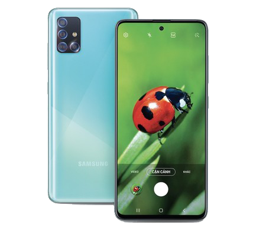
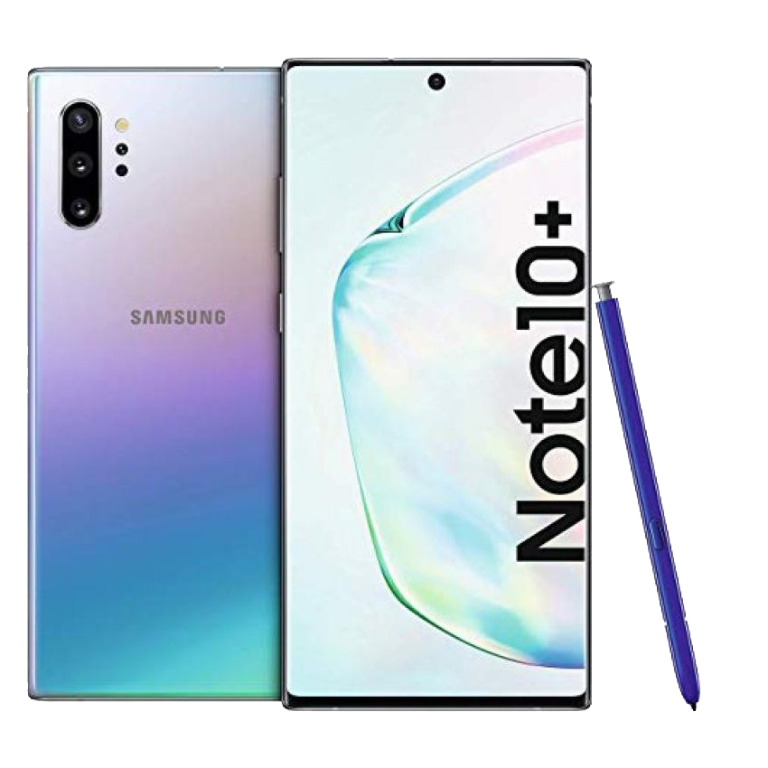
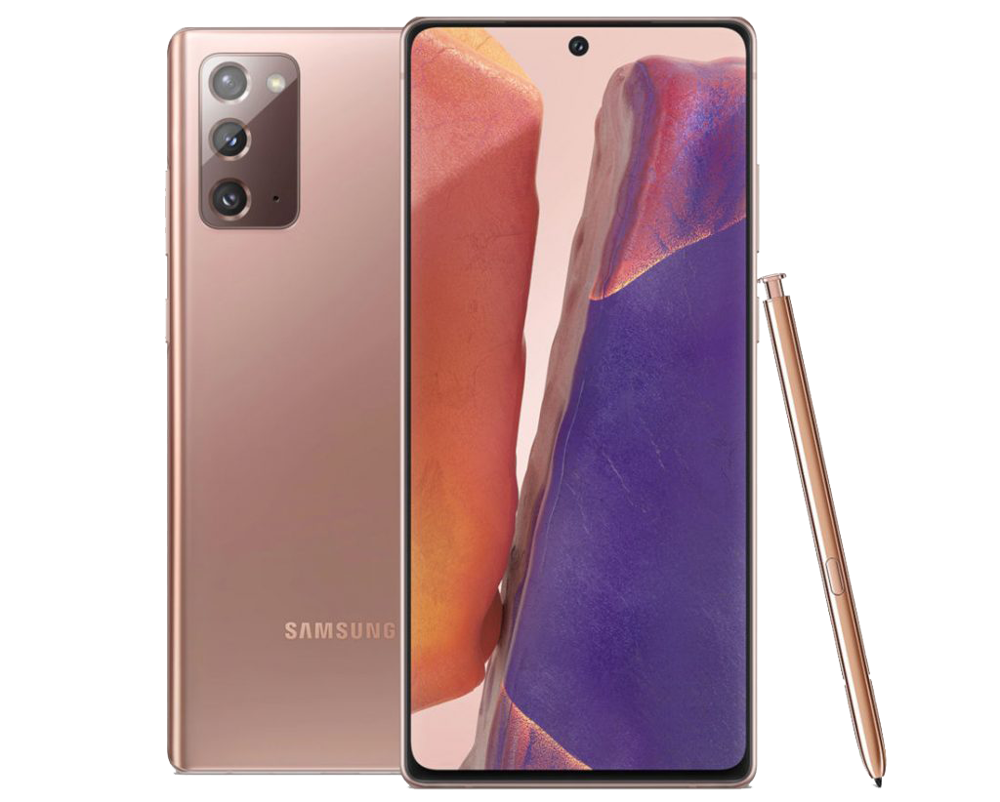
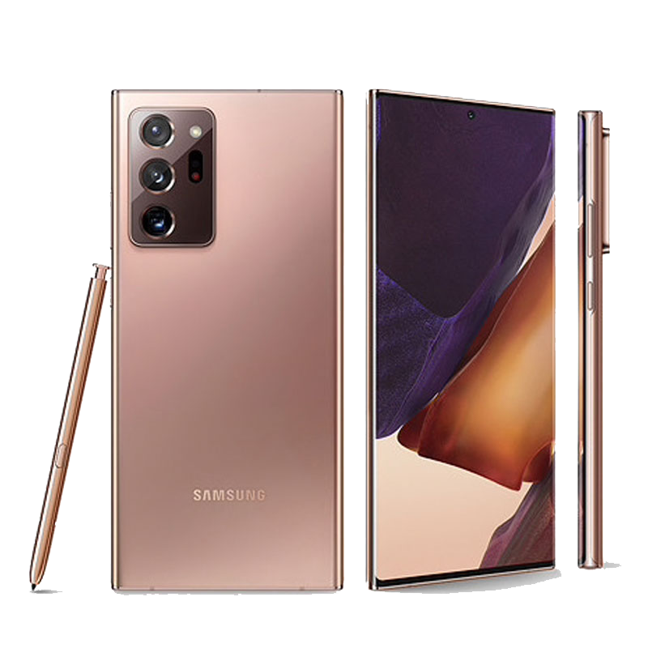

- Colores Disponibles: Aurora Purple
- Tamaño: 76.91mm(Ancho) x 158.92mm(Altura) x 8.1mm(Profunidad); 169g(Peso)
- Resolución de Pantalla: HD+(19:9,1.520 x 720 píxeles)
- Sistema Operativo: Android 8.1 Oreo con EMUI 8.2
- Memoria: 4Gb(RAM); 64Gb(Memoria Interna)
- Cámara: Camára Trasera(13MP + 2MP) f/1.8 IA; Camára Frontal(8MP)f/2.0
- Batería: 4000 mAh; Carga de 5V/2A/10W(Carga Rápida)
- Procesador: Octa-core Qualcomm 450
- Otros: Bluetooth 4.2, WiFi de 2,4 GHz, Dual SIM, dual 4G, microUSB 2.0, GPS, lector de huellas trasero, desbloqueo facial, jack de auriculares, radio FM

- Colores Disponibles: Aurora Blue
- Tamaño: 76.13mm(Ancho) x 158.81mm(Altura) x 8.13mm(Profundidad); 176g(Peso)
- Resolución de Pantalla: HD+ 1560x720 píxeles
- Sistema Operativo: EMUI 9.1 (basado en Android 9)
- Memoria: 4Gb(RAM); 64Gb(Memoria Interna) Hasta 512Gb(Tarjeta SD)
- Cámara: Cámara Trasera[48MP(aperturaf/1.8) + 8MP(lente ultra gran angular, apertura f/2.4) + 2MP(apertura f2.4)]; Cámara Frontal(8 MP, apertura f/2.0)
- Batería: 4,000 mAh; 5V 2A
- Procesador : Kirin 710F Procesador Octa-core 2.2GHz
- Otros: Bluetooth 5.0, 802.11b/g/n, 2.4 GHz; Micro USB, Dual SIM, Sensor de luz ambiental, Sensor de huellas dactilares, Brújula, Sensor de gravedad

- Colores Dispnibles: Crystal
- Tamaño: 77.2mm(Ancho) x 163.1mm(Alto) x 8.8 mm(Profundidad); 206g(Peso)
- Resolución de Pantalla: 1080 x 2340 pixels
- Sistema Operativo: Android 9.0 Pie con EMUI 9.1
- Memoria: 6Gb(RAM), 128Gb(Memoria Interna) Hasta 512Gb(Tarjeta SD)
- Cámara: Cámara Trasera[48MP(f/1.8, PDAF, wide) + 8MP(f/2.4, ultrawide) + 2MP(f/2.4, profundidad) con autofocus por detección de fase, flash LED, IA, geo-tagging, HDR]; Cámara Frontal(16 MP, f/2.2)
- Bateria: 4000 mAh; 10W(Carga Rápida)
- Procesador: Kirin 710F 2.2GHz
- Otros: Bluetooth v4.2 LE, A2DP; Acelerómetro, Sensor de Proximidad y Luz ambiente, Giroscopio, Brújula digital, Lector de Huellas(Costado), Desbloqueo Facial, Dual SIM

- Colores Disponibles: Azul
- Tamaño: 121.1mm(Ancho) x 199.7mm(Altura) x 8.55mm(Profundidad); 310g(Peso)
- Resolución de Pantalla: 1,280 x 800 píxeles
- Sistema Operativo: EMUI 10.0.1 (Basado en Android 10)
- Memoria: 2Gb(RAM), 32Gb(Memoria Interna) Hasta 512Gb(Tarjeta SD)
- Cámara: Cámara Trasera(5MP, apertura f/2.2) con Enfoque automático; Cámara Fronta(2MP, apertura f/2.4) con Longitud focal fija
- Batería: 5,100 mAh; Standard charger supports 5V / 1A output
- Procesador: 4 x Cortex-A53 2.0 GHz + 4 x Cortex-A53 1.5 GHz
- Otros: BT 5.0, Bluetooth Low Energy es compatible; Sensor de Gravedad

- Colores Disponibles: Azul, Rojo, Negro
- Tamaño: 67.5mm(Ancho) x 141.7,,(Altura) x 8.6 mm(Profunidad); 150g(Peso)
- Resolución de Pantalla: 720 x 1480 píxeles
- Sistema Operativo: Android 10 (Go Edition)
- Memoria: 1Gb(RAM), 16Gb(Memoria Interna) / 2Gb(RAM), 32GB(Memoria Interna)
- Cámara: Cámara Trasera(8 MP, f/2.2)con autofocus, flash LED, geo-tagging; Cámara Frontal(5 MP, f/2.4)
- Batería: 3000 mAh
- Procesador: MediaTek MT6739WW 1.5GHz
- Otros: Bluetooth v5.0 LE, A2DP; microUSB 2.0, Acelerómetro, Sensor de Proximidad, Desbloqueo Facial
- Colores Disponibles: Azul, Blanco, Negro
- Tamaño: 76.3mm(Ancho) x 161.4mm(Altura) x 8mm(Profundidad); 177g(Peso)
- Resolución de Pantalla: 720 x 1560 píxeles(HD+)
- Sistema Operativo: Android 10 One UI 2.0
- Memoria: 2Gb(RAM), 32Gb(Memoria Interna)
- Cámara: Cámara Trasera(13.0 MP + 2.0 MP + 5.0 MP, apertura F1.8 , F2.4 , F2.2) con Autoenfoque, Zoom Digital hasta x4;Cámara Frontal(8.0 MP, F/2.0)
- Batería: 4000mAh; Carga Rápida
- Procesador: Octa-Core 1.8Ghz
- Otros: Bluetooth v4.2, USB 2.0, Dual-SIM, Acelerómetro, Sensor de Huella Dactilar, Sensor de Luz, Sensor de Proximidad

- Colores Disponibles: Azul, Blanco
- Tamaño: 75.3mm(Ancho) x 163.7mm(Altura) x 8.9mm(Profundidad); 192g(Peso)
- Resolución de Pantalla: 720 x 1600 (HD+)
- Sistema Operativo: Android 10 One UI 2.0
- Memoria: 4Gb(RAM), 64Gb(Memoria Interna) Hasta 512Gb(Tarjeta SD)
- Cámara: Cámara Trasera[48.0 MP(Apertura F2.0) + 8.0 MP(F2.2) + 2.0 MP(F2.4) + 2.0 MP(F2.4)] con Autoenfoque, zoom hasta x8; Cámara Frontal[13.0 MP(F2.2)]
- Batería: 5000 mAh; Carga Rápida; Tiempo de uso En horas[De Internet 4G(23h), De Internet Wi-Fi(23h), Reproducción de Video(21h), Reproducción de Audio(109h), Conversación 4G LTE(54h)]
- Procesador: Octa-Core 2GHz
- Otros: Bluetooth v5.0 (LE up to 2 Mbps), Dual-SIM, USB 2.0, Bandeja SIM 1 + SIM 2 + MicroSD, Acelerómetro, Sensor de huella dactilar, Giroscopio, Geomagnético, Sensor de Proximidad, Sensor de luz virtual

- Colores Dispnibles: Negro, Blanco, Azul
- Tamaño: 73.1mm(Ancho) x 159.3mm(Altura) x 8.6mm(Profundidad); 192g(Peso)
- Resolución de Pantalla: 1080 x 2400 (FHD+)
- Sistema Operativo: Android 10 con One UI 2.0
- Memoria: 4Gb(RAM), 64Gb(Memoria Interna) Hasta 512(Tarjeta SD)
- Cámara: Cámara Trasera[48.0MP(F2.0) + 5.0MP(F2.4) + 8.0MP(F2.2) + 5.0MP(F2.4)] con Autoenfoque, zoom digital 8x, Flash; Cámara Frontal[20.0 MP, F2.2]
- Batería: 5000mAh; Carga Rápida; Tiempo de Uso En horas[De Internet 4G(20h), De Internet Wi-Fi(20h), Reproducción de Video(22h), Reproducción de Audio(97h), Conversación 4G LTE(33h)]
- Procesador: Octa-Core 2GHz, 1.7GHz
- Otros: Bluetooth v5.0, USB 2.0, Acelerómetro, Sensor de huella dactilar, Giroscopio, Geomagnético, Luminosidad, Sensor de proximidad virtual, Dual-SIM, Bandeja SIM 1 + SIM 2 + MicroSD, Modo Oscuro, Game Booster

- Colores Disponibles: Azul, Blanco
- Tamaño: 73.6mm(Ancho) x 158.5(Altura) x 7.9mm(Profundidad); 172g(Peso)
- Resolución de Pantalla: 1080 x 2400 (FHD+)
- Sistema Operativo: Android 10 Samsung One UI 2.0
- Memoria: 4Gb(RAM), 128Gb(Memoria Interna) Hasta 512Mb(Tarjeta SD)
- Cámara: Cámara Trasera[48.0MP(F2.0) + 12.0MP(F2.2) + 5.0MP(F2.4) + 5.0MP(F2.2)] con Autoenfoque, Zoom hasta 8x, Slow Motion(240FPS@HD), Flash; Cámara Frontal(32.0MP, F2.2)
- Batería: 4000 mAh; Carga Rápida; Tiempo de Uso En horas[De Internet 4G(15h), De Internet Wi-Fi(16h), Reproducción de Video(20h), Reproducción de Audio(87h), Conversación 4G LTE(32h)]
- Procesador: Octa-Core 2.3GHz, 1.7GHz
- Otros: Bluetooth v5.0 (LE up to 2 Mbps), Acelerómetro, Sensor de huella dactilar, Giroscopio, Geomagnético, Hall, Luminosidad, Virtual Proximity Sensing, Dual-SIM, Bandeja SIM 1 + SIM 2 + MicroSD, Modo Noche, Game Booster

- Colores Disponibles: Negro
- Tamaño: 76.0mm(Ancho) x 163.6mm(Altura) x 7.7(Profundidad); 179g(Peso)
- Resolución de Pantalla: 1080 x 2400 (FHD+)
- Sistema Operativo: Android 10
- Memoria: 6Gb(RAM);128Gb(Memoria Interna) Hasta 512Gb(Tarjeta SD)
- Cámara: Cámara Frontal[64.0MP(F1.8) + 12.0MP(F2.2) + 5.0MP(F2.2) + 5.0MP(F2.4)] con Autoenfoque, Zoom 8x, Flash, Cámara Macro, Super Steady, Ultra Angular Slow Motion; Cámara Frontal[32.0 MP, F2.2]
- Batería: 4500 mAh; Carga Super Rápida 25W; Tiempo de Uso En horas[De Internet 4G(16h), De Internet Wi-Fi(16h), Reproducción de Video(24h), Reproducción de Audio(107h), Conversación 4G LTE(42h)]
- Procesador: Octa-Core 2.2GHz, 1.8GHz
- Otros: Bluetooth v5.0 (LE up to 2 Mbps), USB 2.0, Dual-SIM, Bandeja SIM 1 + SIM 2 + MicroSD, Acelerómetro, Sensor de huella dactilar, Giroscopio, Geomagnético, Hall, Sensor Luz RGB, Sensor de Proximidad, Modo Noche, Game Booster

- Colores Disponibles: Aura Glow
- Tamaño: 77,2mm(Ancho) x 162,3mm(Altura) x7,9 mm(Profundidad), 196 g(Peso)
- Tamaño de PEM: 105,08mm(Largo) x 4,35(Ancho) x 5,8 mm(Profundidad), 3,04 g(Peso)
- Resolución de Pantalla: 3.040 x 1.440, 498 ppp, HDR10+
- Sistema Operativo: Android 9 Pie
- Memoria: 12GB(RAM), 256Gb(Memoria Interna) Hasta 1Tb(Tarjeta SD)
- Cámara: Cámara Frontal[Ultra gran angular(16 MP, f/2.2, 123º), Gran angular(12 MP, AF, f/1.5-2.4, OIS, 77º), Telefoto(12 MP, f/2.1, OIS, 45º), Sensor profundidad(VGA, f/1.4, 72º)] con Autoenfoque, Efecto bokeh, Super Steady; Cámara Trasera[10 MP(f/2.2, 80º)] con Autoenfoque
- Batería: 4.300 mAh; Carga inalámbrica; Carga Super rápida 45W
- Procesador: Exynos 9825, 7nm
- Otros: 5G NSA (en algunos mercados), WiFi ac/ax, VHT80 MU-MIMO, Bluetooth 5.0, ANT+, USB-C, NFC, Sensor de huellas ultrasónico, Reconocimiento facial

- Colores Disponibles: Gris
- Tamaño: 75,2mm(Ancho) x 161,6mm(Altura) x 8,3 mm(Profundidad); 192g 4G(Peso)
- Resolución de Pantalla: 2.400 x 1.080 px FullHD+ 393 ppp, 60 Hz, 20:9
- Sistema Operativo: Android 10 + One UI
- Memoria: 8Gb(RAM); 265Gb(Memoria Interna) Hasta
- Cámara: Cámara Trasera[Principal: 12MP(1/1,76”, 1,8 µm), f/1.8, OIS; Gran angular 12MP(1/2,55”, 1,4 µm), f/2.2; Telefoto: 64MP(1/1,72” 0,8 µm), f/2.0, OIS]; Cámara Fronta(10 MP (1/3,24”, 1,22 µm), AF, f/2.2)
- Batería: 4.300 mAh 25W; Carga inalámbrica 15W; Carga inversa 4,5W
- Procesador: Exynos 990
- Otros: 5G (NSA y SA), Sub6 / mmWave Wi-Fi 802.11 a/b/g/n/ac/ax 2.4G+5GHz, HE80, MIMO, 1024-QAM, Bluetooth 5.0, ANT+, NFC GPS, Galileo, Glonass, BeiDou, Altavoces estéreo con decodificación Dolby Atmos, IP68, S Pen, Lector de huellas dactilares ultrasónico y procesador de seguridad

- Colores Disponibles: Negro, Bronce
- Tamaño: 77,2mm(Ancho) x 164,8mm(Altura) x 8,1 mm(Profundidad); 194g 5G(Peso)
- Resolución de Pantalla: Dynamic AMOLED 6,9” (curva); 3.088 x 1.440px WQHD+ 496 ppp, 120 Hz, 19,3:9, HDR10+
- Sistema Operativo: Android 10 + One UI
- Memoria: 12Gb(RAM); 256/512 GB (con MicroSD)
- Cámara: Cámara Trasera[Principal: 108 MP (1/1,33”, 1,8 µm), f/1.8, OIS; Gran angular: 12 MP (1/2,55”, 1,4 µm), f/2.2; Telefoto: 12 MP (1/3,6”, 1 µm), f/3.0, OIS; Sensor profundidad: Láser AF]; Cámara Frontal(10MP)
- Batería: 4.500 mAh 25W; Carga inalámbrica 15 W; Carga inversa 4,5 W
- Procesador: Exynos 990
- Otros: 5G (NSA y SA), Sub6 / mmWave, Wi-Fi 802.11 a/b/g/n/ac/ax 2.4G+5GHz, HE80, MIMO, 1024-QAM, Bluetooth 5.0, ANT+, NFC GPS, Galileo, Glonass, BeiDou, Altavoces estéreo con decodificación Dolby Atmos, IP68, S Pen, Lector de huellas dactilares ultrasónico y procesador de seguridad